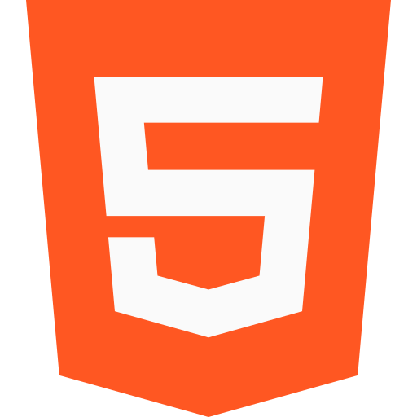

< h1 >
Velkommen til nettsiden min!
Lea Skagen, Frontend Utvikler Student
< / h1 >
< h1 > Prosjekter < / h1 >
Sveip høyre eller venstre for å se prosjekter jeg jobber eller har jobbet med
Teknologier jeg har jobbet med:
< div class="technologies-container" >
HTML
CSS

Javascript

React

Sass
Java

MongoDB

Kotlin

Figma

Photoshop

< / div >
Gyldne Pizza Portalen 

Dette prosjektet lagde jeg og noen av medstudentene mine for en eksamen vi hadde i det andre semesteret (våren 2021).
Denne nettsiden er laget for de ansatte som drifter en fiksjonell restaurantkjede. Her kan man se statistikk for de forskjellige restaurantene, legge til eller fjerne ansatte, redigere menyen, og andre ting man kanskje ønsker å gjøre når man styrer en restaurantkjede.
Teknologier brukt: HTML, CSS, Bulma, Javascript, Google Charts
Meliora Impact
Dette er for øyeblikket det mest komplekse prosjektet jeg har vært med på så langt, den ble laget med gruppa mi i forbindelse med en eksamensoppgave vi hadde i vår. Prosjektet er laget for Meliora Impact som er en Norsk non profit bedrift. De ønsket en plattform hvor små og mellomstore bedrifter kan abonnere til forskjellige veldedigheter, som vil si at man donerer til dem regelmessig.
Teknologier brukt: React, CSS, Google OpenID, MongoDB, Express.js
< h1 > Kontakt meg < / h1 >
Denne nettsiden ble laget med HTML, Sass og fullPage.js
Ikoner er fra www.flaticon.com og https://freeicons.io